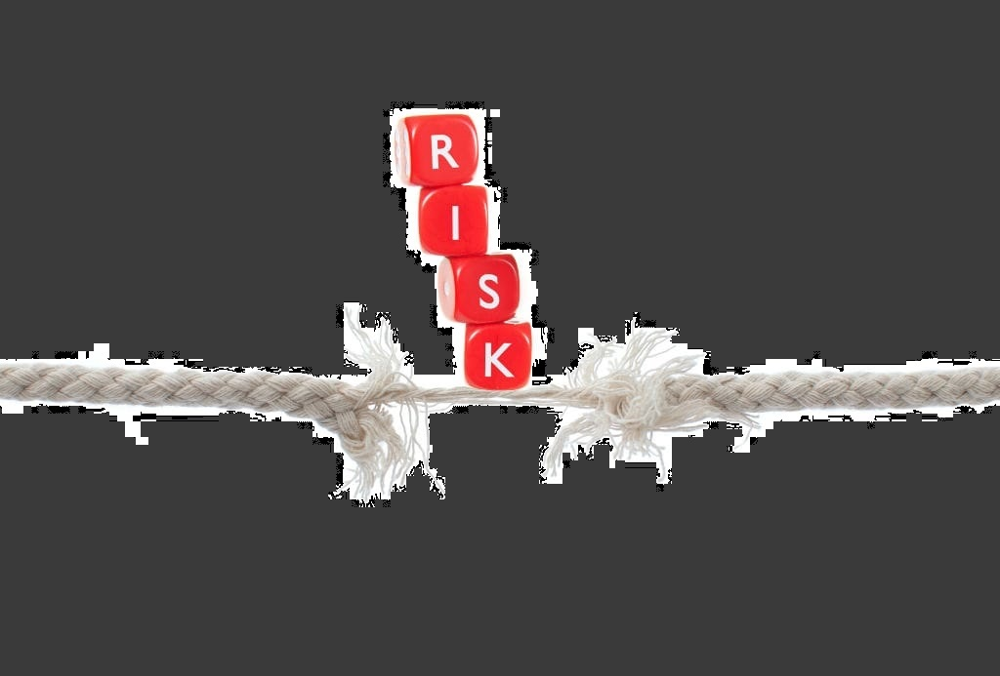

Start-Up With Particular_수프와 함께하는 특별한 창업준비
온라인 창업에 대해서
창업을 하는 것에 있어서 빼놓을 수 없는 요소 리스크!
리스크가 비교적 적은 온라인 창업에 대해 알아봅시다.

온라인 창업의 장단점
초기비용이 적다.
인터넷 쇼핑몰의 최고의 장점은 바로 창업비용이 적다 라는 것입니다.
오프라인 창업의 경우, 상권에 따른 임대로, 보증금 인테리어 비용 등 고가의 비용이 지출되는 것에 비해 온라인 창업은 위와
같은 비용이 들지 않습니다.
1인 창업 쇼핑몰을 개설하는 데는 무료~300만원 정도의 초기진입비용이 들어 오프라인 마켓 창업과 비교할 때 부담이 적게 듭니다.
사업 실패 후 리스크가 적다.
창업의 경험이 없는 예비 창업자의 경우, 창업을 해보려는 의욕이 앞서지만 반대의 경우 즉 실패의 고배를 마실 때의 경우를 생각하지 않을 수 없습니다.
온라인 쇼핑몰의 90%가 망한다는 이야기가 있을 정도로 이 시장은 경쟁이 치열하고 힘들지만, 그럼에도 불구하고 매일매일 새로 생겨나는 쇼핑몰이 많은 이유는 그만큼 리스크가 적다는 이유 때문입니다.
공간이나 시간의 구속에서 비교적 자유롭다.
24시간 무인으로 돌아가는 자신만의 자판기가 되어줍니다. 오프라인에서 24시간 상점을 돌리려면 상대적으로 많은 인건비가 지출되지만 온라인 마켓은 무료입니다.
온라인 쇼핑몰에서 판매되는 상품은 꼭 국내에만 국한되어 있는 것이 아니기 때문에 지방이나 해외에 있는 소비자들에게도 내 상품을 팔 수 있는 기회와 요건이 충족됩니다.
나만의 자동판매기
앞서 설명처럼 24시간 무인으로 돌아가기 때문에 소비자들은 어느 시간대에도 쇼핑을 즐길 수 있습니다.
또한 프로그램을 통해 주문, 회원가입, 아이쇼핑 등이 자동으로 돌아가 한번 프로그램을 적용 시켜 놓으면 시스템을 바꾸기 전까지는 오토루팅으로 돌아갑니다.
데이터 분석이 가능하다.
인터넷 쇼핑몰에서 구매를 하거나 접속을 하게 되면 회원의 정보나 방문자의 정보가 내 사이트에 로그라는 파일로 저장됩니다. 언제, 어디서 접속을 했고 어떤 상품과 페이지들을 클릭해보고 나갔는지를 알려주므로 로그분석을 통해 고객의 행동 패턴을 이용해 분석 상품의 판매 패턴을 알 수 있습니다.
오프라인 마켓에 비해 재고부담이 적다.
오프라인 마켓의 경우 매장에 디스플레이를 해놓아야 하기 때문에 재고량이 중요하지만 온라인의 경우 물건이 없고 이미지만 있어도 바로 판매가 시작됩니다.
소비자가 내 쇼핑몰에 들어와서 주문을 한 후 상품을 준비/배송해주는 방식이므로 재고의 부담이 적습니다.
고객응대
쇼핑몰에서 가장 중요한 부분 중 하나가 바로 이 cs응대입니다.
고객을 직접 상대하는 오프라인 상점과는 다르게 오로지 상품의 이미지와 설명하는 글만들 가지고 우리의 물건을 판매하는
입장이기 때문에 고객과의 충돌이 종종 있습니다. 상품의 크기와 재질, 품질 등을 전달하기가 상대적으로 어렵습니다.
식료품의 경우 소비자가 원하는 맛에 접근하기가 상당히 까다로운 점이 있습니다.
고객 응대 시 쇼핑몰에서의 1:1 대화나 게시판의 글로 상담을 하기 때문에 전달이 용이하지 않습니다. 전화 상담 또한 흥분한 소비자의 경우 창업 초보들에게는 힘든 응대가 될 수도 있습니다.
배송사고
택배서비스를 이용하게 되는 인터넷 쇼핑몰은 전국으로 물건이 배달되기 때문에 배송사고가 발생하기 쉽습니다. 이럴때는 고객들의 불만을 빨리 해소시켜주며 후속조취를 취하는 것이 필요합니다.
주문시에 고객들이 가장 원하는 것은 빠른 배송입니다. 자신이 원하는 물건을 가진 고객은 한시라도 빨리 그 물건을 확인하고 사용해 보고 싶어 합니다. 이런 상황에서 물건이 파손되거나 물건의 도착여부에 따른 빠른 판매자의 대처와 그에 따른 보상이 이루어져야 합니다.
반품
가장 많이 일어나고 예민한 문제가 바로 이 반품 문제입니다.
예전에는 판매자의 역량에 따라 구매 시 조건에 따라 반품이 되지 않게끔 판매자 임의로 지정할 수 있었는데 지금은 법으로
일주일 까지는 구매자의 단순변심에 따른 환불이라도 환불을 해줘야 합니다.
제품이 하자 있을 경우 역시 반품이 들어 오는데 배송비의 추가결제, 수리비 청구 등의 부분에 있어 운영자가 미리 운영정책을 제시하여 고객과 마찰이 일어나지 않도록 신경써야 합니다.
홍보비
쇼핑몰을 오픈하면 아무도 내 사이트에 오지 않습니다. 고객이 내 사이트에 오게 하려면 홍보는 필수적입니다.
홍보와 광고로 들어가는 비용과 쇼핑몰의 매출은 정비례하기 때문에 비용 또는 시간을 들여 홍보를 하는 것은 중요합니다.
하지만 홍보 비용이 만만치 않고, 인터넷 쇼핑몰의 경우 카드결제의 정산주기가 일주일을 넘고 에스크로 서비스의 제약이 있어
자금융통의 어려움 또한 대비해야 합니다.
상품 수
재고가 많이 필요하지는 않지만 상품의 다양함이 필요한 것이 인터넷 쇼핑몰입니다.
패션 관련 쇼핑몰의 경우 계절에 따른 다양 한 상품들에 따라 매출이 증가하거나 감소하기도 하므로 신상품 업데이터를 자주
해 주어야 합니다.
자주 방문하는 고객이 변하지 않는 곳에 대한 불신이 쌓이게 되므로 신상품 업데이트를 시켜줘야 할 필요성이 있습니다. 신상품 업데이트에 따른 사입, 촬영, 상세페이지 제작, 고객 상담 등의 업무들이 증가하는 것은 당연한 수순입니다.
상권 보호
어느 상품이 대박이 나면 얼마 지나지 않아 관련 상권이 치열해지는 것이 우리나라 특성입니다. 판매자들은 자신들의 상권이 계속 유지되기를 바라지만 진입장벽이 상대적으로 낮은 온라인 쇼핑몰의 경우 경쟁구도가 치열하기 때문에 이런 리스크를 극복하기 위해 판매자는 끊임없이 틈새 아이템 루트 개발을 해야 하는 고충이 있습니다.
쇼핑몰 창업의 절차
온라인 쇼핑몰은 쉽게 창업하고 쉽게 포기하는 경향이 있습니다.
온라인 창업의 경우 오프라인에서 가게를 오픈할 때 보다 비용이 많이 들어가지 않고 쇼핑몰만 있으면 시작할 수 있다고 생각하기 때문입니다. 하지만 제대로 된 온라인 쇼핑몰 창업이라면 가게를 오픈하는 것과 같으며 오랜시간 준비해야 하는 일이 많습니다.
사업 준비 단계
- 아이템 선정
- 시장조사
- 창업계획 수립
- 벤치마킹
- 설립 준비
위의 내용은 온라인 쇼핑몰을 창업하기 위하여 준비해야 하는 내용입니다. 이중에서 가장 중요한 것이 아이템의 선정입니다. 아이템이 올바르지 못하면 성공 가능성이 높지 않기 때문입니다.
아이템의 나만의 아이디어, 독창성 등 차별화가 매우 중요합니다.
아이템이 선정되고 난 후 시장조사를 충분히 진행해야 합니다. 내 상품이 시장에서 어느 가격에 얼마만큼 판매될 수 있는지, 문제점은 없는지를 조사하고 분석해야 합니다. 시장조사과 함께 조사된 내용을 바탕으로 창업게획(사업계획)을 수립합니다. 창업계획은 기획서 형식으로 단기, 중기, 장기 계획으로 구분하여 상세하고치밀한 계획을 수립해야 합니다. 조급하면 허점을 보이기 쉽기 때문에 치밀하게 시간을 두고 준비하고 수정 과정을 반복합니다.
시장조사과 함께 수행해야 하는 것이 벤치마킹입니다. 벤치마킹이랑 만들고자 하는 쇼핑몰과 동종 또는 유사업종의 특징을 분석하는 과정입니다. 이 과정에서 제작하고자 하는 사이트와 유사한 참고사이트도 선정하고 사이트맵도 구성하여 봅니다.
가끔 온라인 쇼핑몰 창업을 한다고 하면서 직접 쇼핑몰을 제작까지 하겠다고 하는 경우를 볼 수 있습니다. 이 경우 쇼핑몰부터 제작하면 창업이 된다고 생각하기 때문이며, 템플릿을 이용하면 쉽게 제작할 수 있다고 판단하기 때문입니다.
하지만 템플릿으로 제작한다 해도 제작과정에서 폰트, 디자인이미지 구입 등을 구려해야 하고 템플릿의 코딩 구조 등을 공부해야 하는 등 난관이 많습니다.
창업을 위해서는 회사 상호도 구상하고, 로고를 만들고, 도메인을 등록하고, 상호를 상표등록하는 등의 과정이 필요하며, 상품구매 과정, 홍보, 광고 등 준비하고, 공부해야 하는 일이 너무 많습니다. 단지 쇼핑몰만 제작되면 창업이 완료되는 것이 아니기 때문에 쇼핑몰 제작은 제작 전문가에게 의뢰하는 것이 합리적입니다.
온라인 쇼핑몰 제작 업체를 선정하는 것은 매우 중요합니다.
가격으로 저렴한 것도 중요하고 고품질의 디자인도 중요합니다. 하지만 가장 중요한 것은 제작된 사이트가 확장성과 이요의 편리성이
있는 상태로 제작되는 것이 더 중요합니다.
업체를 선정할 때 반드시 확인해야 할 것은 사업자 등록증, 포트폴리오, 견적 내용, 계약서, 추진과정 등입니다.
쇼핑몰 제작회사(웹에이전시)는 인터넷분야의 전문지식이 있는 회사이기 때문에 제작 이외에도 인터넷 분야의 다양한 지원(컨설팅)을 요구할 수 있기 때문에 어디까지 지원하는지도 중요한 결정요소가 됩니다.
쇼핑몰 제작단계
- 쇼핑몰 제작업체 선정
- 쇼핑몰 제작 계약
- 콘텐츠 준비
- 상품 등록 준비
- 검수 및 상품 등록 TEST
온라인 쇼핑몰 창업은 사이트 제작 이외에도 준비해야 할 일이 많고 고려해야 할 사항도 많습니다. 하지만 쇼핑몰 제작 단계부터는 전문업체와 함께 협의하여 가며 진행할 수 있습니다.
업체가 사이트를 제작하는 동안 상품촬영, 사진 편집, 상품가격과 SPEC 정리, 상품특징 정리 등을 준비하고 의뢰한 사이트가 제대로 제작되었는가를 검수하며, 준비된 상품을 쇼핑몰에 등록하면서 Test하는 과정이 필요합니다.
쇼핑몰 오픈 준비
- 통신판매업 신고
- 사업자 통장 개설 및 안전 거래 인증
- 결제사 계약 및 연동
- 문자 계약 및 연동
- 택배 업체 선정
- 쇼핑몰 오픈
쇼핑몰 제작이 완료되었다고 쇼핑몰을 바로 오픈할 수 있는 것은 아닙니다.
사업자등록이 되었다면 사업자 명의로 통장을 개설하고 안전거래 인증마크를 신청하여 쇼핑몰에 연동하는 과정이 필요합니다. 또한 해당 구청의 지역경제과에서 통신판매허가를 받아서 사이트에 표현하는 등의 과정이 있어야 오픈 가능합니다.
필요에 따라서는 카드 결제를 위하여 PG사와 계약하고 연동해야 하며, 문자서비스 업체와 계약하고 사이트에 연동하는 과정도 진행해야 합니다.
쇼핑몰 운영 및 마케팅
- 포탈사이트 등록
- 마케팅 전략 수립
- 수익률 분석
- 쇼핑몰 유지관리
쇼핑몰을 오픈하였다고 수익이 발생하는 것은 아닙니다.
쇼핑몰을 제작하는 과정까지는 쉬운 과정에 속하며, 쇼핑몰을 운영하여 수익을 발생기키는 과정은 장시간에 거쳐 다양한 마케팅 전략으로 시행착오를 거치게 됩니다. 이 경우에도 전문업체와 협의하여 진행할 수 있고, 도움을 받을 수 있기 때문에 업체 선정이 중요합니다.
하지만 마케팅 방법과 전략이라는 것이 수익을 창출하기 위한 과정이고 이 과정은 정답이 없습니다.
업체별로 마케팅 투자비용이 다르고 방법이 다르기 때문에 얼마든지 수익이 다르게 창출될 수 있습니다.